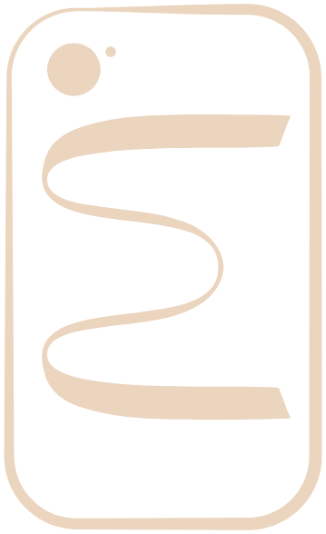

Crio vídeos para marcas, casamentos e eventos com sensibilidade e intenção clara, do roteiro à edição final, para eternizar os detalhes que passam despercebidos na correria do momento.
A Maari Mobile nasce da união entre a sensibilidade humana e a agilidade da tecnologia móvel. Mais do que registrar imagens, o propósito é eternizar sentimentos e detalhes que muitas vezes passam despercebidos na correria do momento, para que cada cliente reviva suas histórias com emoção, ritmo e verdade.
Meu trabalho é próximo e comprometido: conversamos antes de gravar, eu acompanho cada captação e cuido da edição como se a história fosse minha. É isso que dá segurança para quem me confia os seus momentos mais importantes.
Cada projeto pede uma abordagem diferente. Passe o mouse (ou toque) nos cards para saber mais.
Vídeos recorrentes para redes sociais e campanhas, com roteiro e edição pensados para posicionar o seu negócio.
Ver trabalhosUm filme do seu dia, com a emoção, o som e o ritmo de cada momento, para reviver quantas vezes quiser.
Ver trabalhosCorporativos, formaturas e celebrações registrados com a atmosfera real de quem estava lá.
Ver trabalhosJá tem o material bruto? Eu edito com cortes, trilha e legendas para prender a atenção desde o primeiro segundo.
Ver trabalhosConceito, Emoção, Narrativa e Ação. As quatro etapas que guiam todo projeto, do primeiro briefing à entrega.
Entendo quem você é, para quem fala e qual a ideia central que o vídeo precisa carregar.
Defino o sentimento que cada cena deve provocar, da trilha à luz e ao enquadramento.
Organizo começo, meio e fim para que a história flua e prenda até o último segundo.
Todo vídeo tem um propósito: vender, emocionar, lembrar. A entrega é pensada para isso.
“Coloque aqui um depoimento real de cliente. Uma frase curta e verdadeira vale mais do que um parágrafo.”

Próximo passoMe conta o que você tem em mente. Não precisa estar tudo definido: a gente descobre o melhor caminho juntas na conversa.